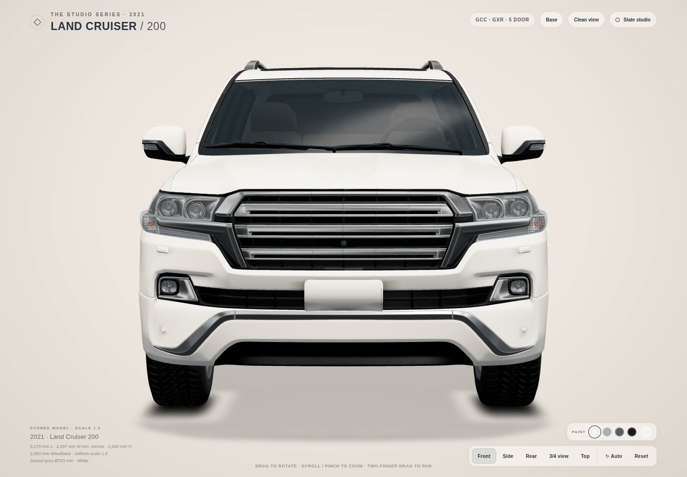
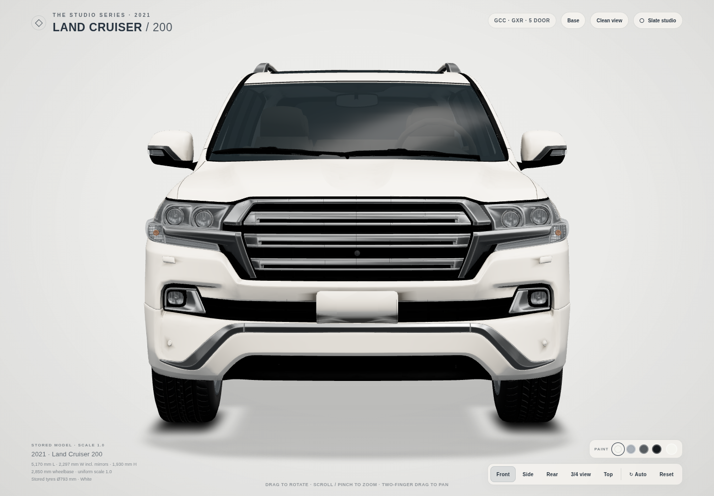
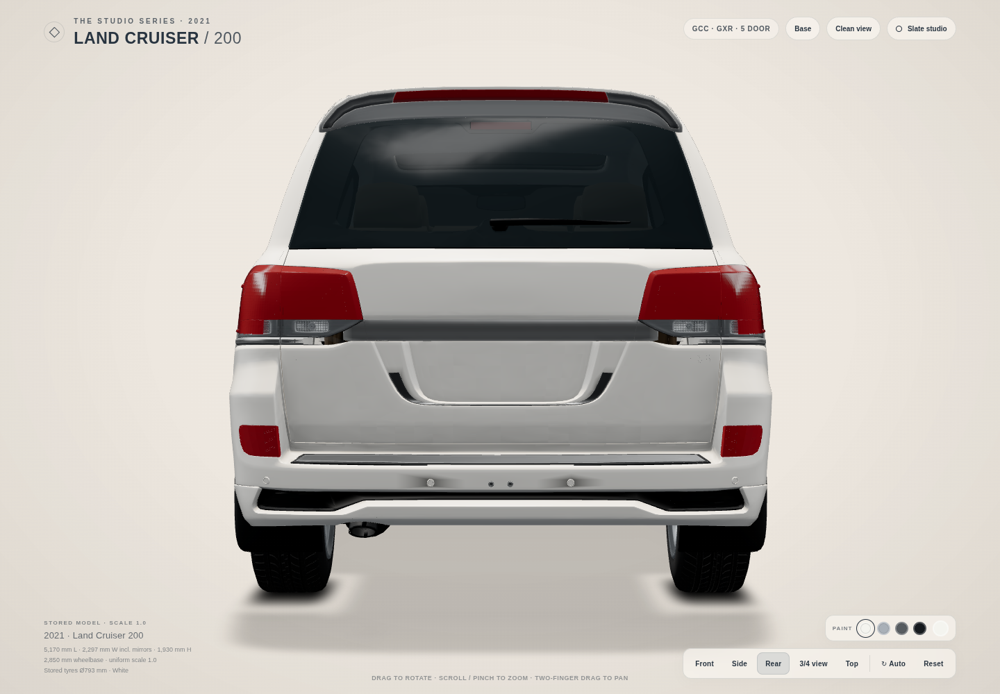
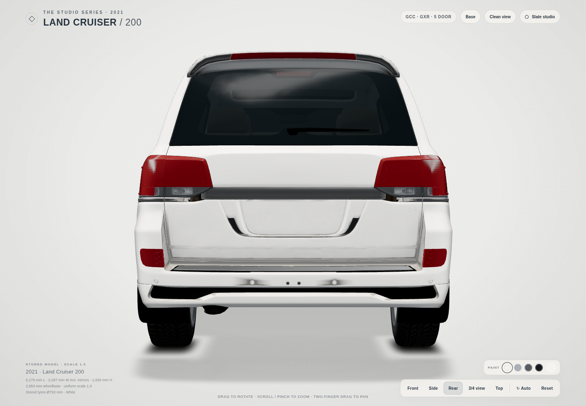

Baseline 6a0294b. Full-size 1440 × 1000 captures. Tap any image to open its PNG.
Open viewer · Full 7×7 sample ledger · Regression checks · Every changed value




| Value | Before | After |
|---|---|---|
| Background centre / 0% | #EFEAE3 | #ECECEA |
| Background middle / 50% | #EDE7DF | #EBEBE9 |
| Background edge / 100% | #E4DED5 | #E1E1DF |
| Cream theme colour (initial + switch) | #EFEAE3 | #EBEBE9 |
| Baked AO strength | 0.90 | 1.12 |
| Convex ridge strength | 0.70 | 1.00 |
| Concave valley strength | 0.90 | 1.35 |
| AO exponent | 1.0 | 1.0–2.5, curvature-weighted |
| AO exponent curvature gate | none | smoothstep(0.02, 0.10, abs(G−0.5)×2) |
| Cavity minimum | 0.18 | 0.10 |
| Direct diffuse cavity weight | 0.65 | 0.90 |
| Indirect specular cavity weight | 0.72 | 0.85 |
| Indirect clearcoat cavity weight | 0.72 | 0.85 |
| Direct specular cavity weight | 0.25 | 0.50 |
| Rear-facing indirect fill multiplier | 1.0 | 1.0–3.8 |
| Rear fill normal gate | none | smoothstep(0.15, 0.80, worldNormal.x) |
| Default black trim colour | #0d1115 | #050607 |
| Black trim roughness | 0.56 | 0.72 |
| Black trim environment intensity | 1.00 | 0.20 |
| Black trim final specular multiplier, direct + indirect | 1.00 | 0.25 |
| Cream paint shader cache key | lc200-cream-paint-lighting-v3 | lc200-cream-paint-lighting-v4 |
| Cream trim shader cache key | lc200-baked-ao-curvature-v1 | lc200-cream-baked-detail-v1 |
Identical pixel coordinates before/after. Mixed patches include more than one material and can dilute a narrow gap.
| View/sample | Pixel | Before | After |
|---|---|---|---|
| front / frontBonnet | [720, 375] | #f3f1ed | #f3f1ed |
| front / frontBonnetEdge | [366, 377] | #f1efea | #f1efea |
| front / frontBonnetBackground | [340, 360] | #eee8e0 | #ebebe9 |
| front / frontBumper | [445, 551] | #e0dcd5 | #e0dcd5 |
| front / background | [720, 100] | #eee8e0 | #ebebe9 |
| front / grilleRecess | [650, 507] | #020202 | #000000 |
| front / bonnetGap | [720, 399] | #262728 | #020202 |
| front / lampRecess | [447, 487] | #1b1e20 | #1b1e20 |
| front / lowerTrim | [600, 624] | #0b0b0c | #010101 |
| side / bonnet | [341, 422] | #f4f2ef | #f4f2ee |
| side / roof | [859, 288] | #f1efec | #f1efec |
| side / frontDoor | [634, 468] | #dad8d4 | #dad8d4 |
| side / lowerDoor | [635, 551] | #e0deda | #dbd8d4 |
| side / background | [720, 140] | #eee8e0 | #ebebe9 |
| side / tyreRubber | [330, 539] | #262727 | #262727 |
| side / wheelFace | [353, 599] | #3b3f42 | #3b3f42 |
| side / sideGlass | [624, 357] | #67696b | #67696b |
| side / groundFrontLeft | [330, 718] | #dcd8d0 | #dbdbda |
| side / groundRearLeft | [1005, 718] | #ddd8d1 | #dcdcda |
| side / rearQuarter | [1170, 440] | #e2e0dd | #e2e0dd |
| side / rearQuarterBackground | [1325, 440] | #e9e3db | #e7e7e5 |
| side / sill | [700, 633] | #bebebc | #bdbdbb |
| side / frontWing | [267, 472] | #e9e7e3 | #e9e7e3 |
| side / frontWingBackground | [267, 411] | #ede7df | #ebebe9 |
| side / spoilerTip | [1234, 291] | #edebe7 | #edebe7 |
| side / spoilerBackground | [1234, 275] | #eae4dc | #e8e8e6 |
| side / bonnetBackground | [341, 405] | #ede8e0 | #ebebe9 |
| side / roofBackground | [859, 250] | #eee9e1 | #ececea |
| side / pillar | [734, 350] | #4a4a4a | #101111 |
| side / handleRecess | [670, 446] | #d9d8d4 | #d5d3cf |
| side / doorGap | [715, 468] | #d8d6d3 | #d8d6d2 |
| side / archLip | [405, 500] | #c4c3c2 | #c4c3c2 |
| side / lowerTrim | [700, 624] | #000000 | #000000 |
| quarter / bonnet | [472, 420] | #f3f1ee | #f3f1ee |
| quarter / roof | [861, 206] | #efece7 | #eeebe7 |
| quarter / frontDoor | [871, 467] | #d8d6d2 | #d8d6d2 |
| quarter / lowerDoor | [867, 559] | #dfddd8 | #dad8d3 |
| quarter / background | [720, 140] | #eee8e0 | #ebebe9 |
| quarter / tyreRubber | [608, 599] | #252526 | #252526 |
| quarter / wheelFace | [632, 664] | #35393c | #35393c |
| quarter / sideGlass | [824, 332] | #293134 | #293134 |
| quarter / groundFrontLeft | [570, 806] | #1e1d1c | #1d1d1d |
| quarter / groundRearLeft | [1090, 673] | #4e4c49 | #4d4d4d |
| quarter / pillar | [920, 330] | #1c1e20 | #060607 |
| quarter / handleRecess | [898, 438] | #6d6d6c | #515251 |
| quarter / doorGap | [933, 490] | #c5c4c3 | #c4c3c2 |
| quarter / archLip | [665, 541] | #c2c2c0 | #c2c2c0 |
| quarter / lampRecess | [516, 534] | #eae8e4 | #eae8e4 |
| rear / tailgate | [720, 418] | #a9a8a6 | #dadad8 |
| rear / tailgateLower | [720, 565] | #a09f9d | #d4d4d2 |
| rear / rearBumper | [720, 694] | #a09f9d | #d4d4d2 |
| rear / background | [720, 100] | #eee8e0 | #ebebe9 |
| rear / tailgateOuter | [1000, 581] | #9e9e9b | #d2d2d0 |
| rear / plateRecess | [579, 567] | #17191b | #17191b |
| rear / lampRecess | [518, 488] | #3b3d3e | #3b3d3e |
| rear / lowerTrim | [700, 714] | #161616 | #010101 |
| rear / rearPanelEdge | [403, 600] | #adadab | #acaba9 |
35 checks pass; zero errors. Clay and Slate: 12 comparisons with zero differing pixels. Geometry, normals, baked attributes, cameras and build data preserved. No extra passes/maps.